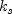

|
Langley Research CenterTurbulence Modeling Resource |
The Nut-92 Turbulence Model
This web page gives detailed information
on the equations for various forms of the
Nut-92 one-equation turbulence model.
All forms of the model given on this page are linear eddy viscosity models.
Linear models use the Boussinesq assumption for the constitutive relation:
where the last term is generally ignored for one-equation models like this one
because k is not readily available (the term
is sometimes ignored for non-supersonic speed flows for other models as well).
Unless otherwise stated, for compressible flow with heat transfer this model is implemented as described on the page
Implementing Turbulence Models into the Compressible RANS Equations, with perfect gas
assumed and Pr = 0.72, Prt = 0.90, and Sutherland's law for dynamic viscosity.
Return to: Turbulence Modeling Resource Home Page The first version listed (Nut-92) is the latest "standard"
version of this model.
Nut-92 (1995)
Model (Nut-92)
The Nut-92 model evolved from a model originally proposed by Kovasznay in 1967. The model was improved
over the years, including one termed Nut-90. None of these earlier variants is described here
(see the reference below for more details).
The reference for the Nut-92 one-equation model is:
The model (written in conservation form) is given by the following:
where
Here, a is the speed of sound and the angle braces < > represent a long-time average. The turbulent eddy viscosity is
Other term appearing in the above equations are given by:
The term is the distance to the nearest wall, and
and  is the Nikuradse roughness scale height (0 for smooth walls).
The constants are:
There are no specific farfield boundary conditions recommended for this model (see
also Sekundov, A. N., Fluid Dynamics 47(1):20-25, 2012,
https://doi.org/10.1134/S0015462812010036).
At solid smooth walls:
At solid rough walls:
where is the wall shear stress
and Nut-92 (1993)
Model (Nut-92-FD)
The reference for this model is:
The model is an earlier version of (Nut-92).
It is given by the same main equation (written in conservation form). However,
the following expressions are slightly different:
For smooth walls, (Nut-92-FD) and
(Nut-92) are identical.
Return to: Turbulence Modeling Resource Home Page
Recent significant updates: Responsible NASA Official:
Ethan Vogel


![D_{\nu} = \rho C_5 \nu_t^2 \Gamma_1^2 / a^2 +
\rho C_4 \nu_t \left( \frac{\partial \langle u_j \rangle}{\partial x_j} +
\left| \frac{\partial \langle u_j \rangle}{\partial x_j} \right| \right) +
\rho \left[ C_6 \nu_t ( N_1 d_w + \nu_{t,w}) + C_7 F_1 \nu \nu_t \right] / d^2](nut92_eqns/img4.png)


 is the
friction velocity
is the
friction velocity  .
.

6/30/2015 - mention Pr, Pr_t, and Sutherland's law
Page Curator:
Clark Pederson
Last Updated: 11/08/2021